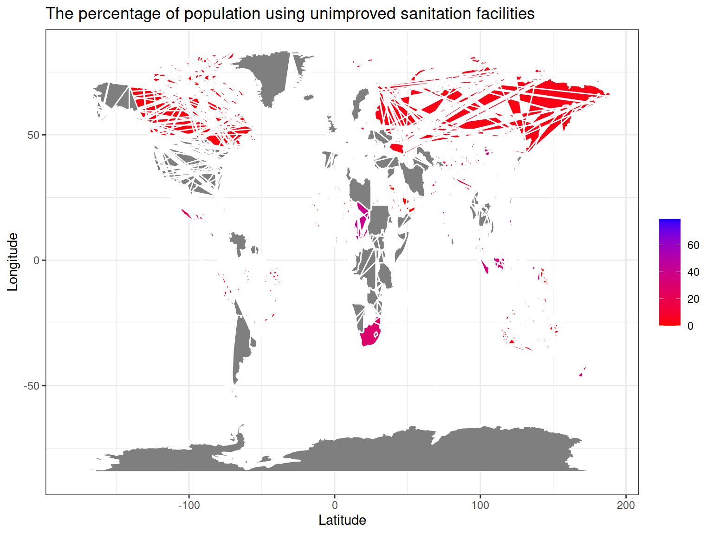
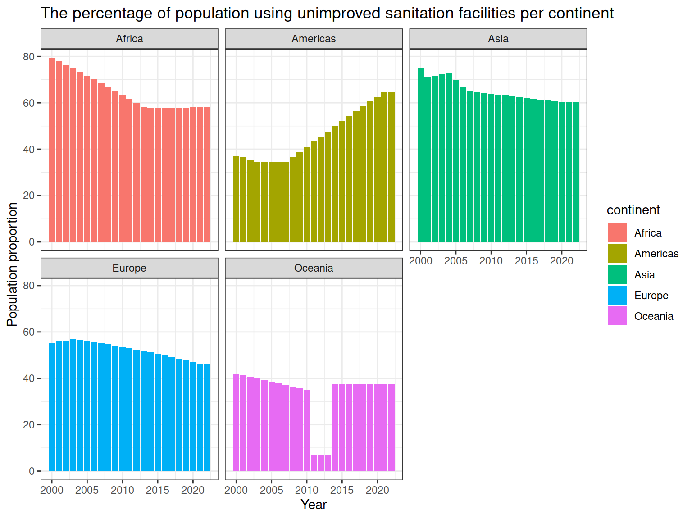
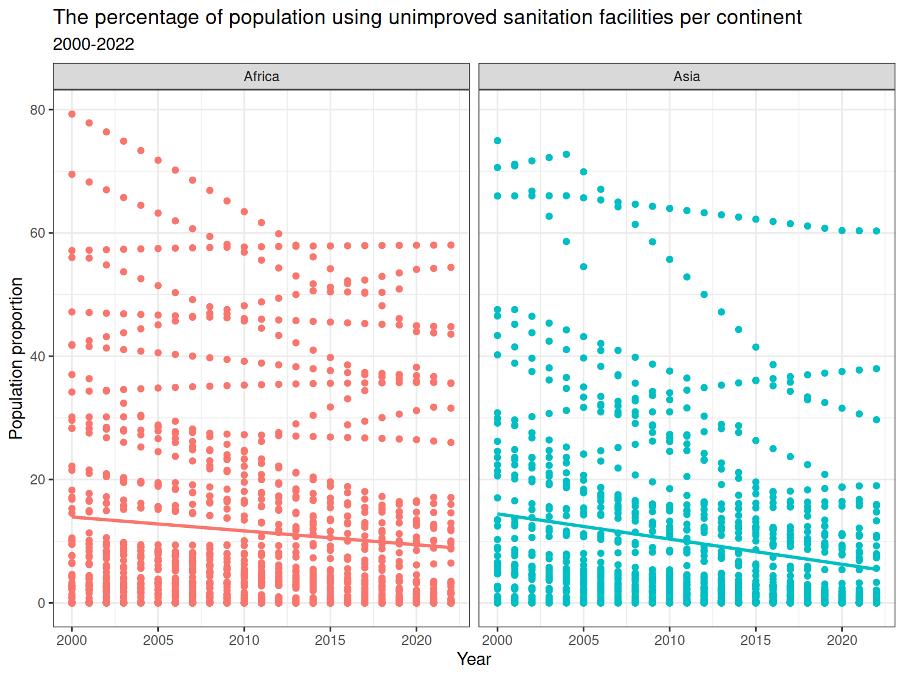
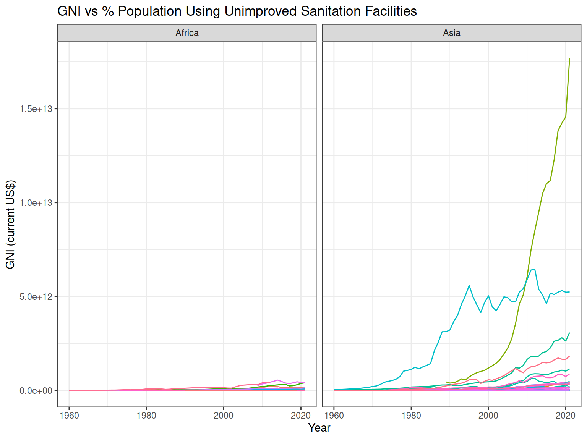

Sanitation, Development, and the Numbers that Matter
Author
Saran Quinn
Published
2024-04-25
Here, we’ll unveil the data behind the lack of basic sanitation facilities, with a spotlight on how Asia and Africa are disproportionately affected. We’ll explore historical trends, analyze the consequences on health, development, and well-being, and ultimately, highlight the urgent need for progress towards a cleaner, healthier future for all.
Population using unimproved sanitation facilities (%)
The percentage of population using an unimproved sanitation facility. Unimproved Sanitation Facilities: This term refers to toilets or systems that do not effectively separate human waste from human contact, posing a significant health risk. Here are some examples of unimproved sanitation facilities Flush or pour-flush to elsewhere: This includes situations where waste goes directly into waterways, drainage ditches, or open spaces.. Pit latrine without a slab or open pit: These lack a solid platform over the pit, allowing flies and other insects to come into contact with the waste, potentially spreading diseases. Bucket, hanging toilet, or hanging latrine: These facilities often lack proper containment and can easily spill or leak, contaminating the surrounding environment, No facilities or bush or field (open defecation): This refers to a complete lack of sanitation facilities, forcing people to defecate in the open, posing a severe health hazard.) (WHD & UNICEF, 2010.)
World map
## world mapworld.map <-map_data("world")world.map.data <-merge(world.map, metadata_indicator, by.x ="region", by.y ="country", all.x =TRUE)world.map.data |>ggplot(aes(x = long, y = lat, group = group)) +geom_polygon(aes(fill = obs_value), color ="white") +scale_fill_gradient(low ="red", high ="blue") +labs(x='Latitude', y='Longitude',title ="The percentage of population using unimproved sanitation facilities", fill ="") +theme_bw()

Figure 1: The percentage of population using unimproved sanitation facilities
The map in Figure 1 reveals the stark disparities in access to proper sanitation facilities around the world. As you can see, continents like Asia and Africa are disproportionately affected, with a high percentage of their populations lacking access to basic sanitation. This lack of access to improved sanitation facilities has devastating consequences, impacting public health, economic development, and overall well-being.
The average percentage of population using unimproved sanitation facilities per continent (2000-2020)
bar chart
## bar plot# make continent data with available countriesmetadata_indicator <- metadata_indicator |> dplyr::mutate( continents <-countrycode(alpha_3_code, "iso3c", "continent") )metadata_indicator <- metadata_indicator |>rename(continent =`continents <- countrycode(alpha_3_code, "iso3c", "continent")`)ggplot(metadata_indicator, aes(x=time_period, y=obs_value, fill=continent)) +geom_col(position='dodge') +labs(x='Year', y='Population proportion',title='The percentage of population using unimproved sanitation facilities per continent') +facet_wrap(~ continent) +theme_bw()

Figure 2: The average percentage of population using unimproved sanitation facilities per continent
It’s clear in Figure 2 that Africa and Asia stand out with the highest average percentages throughout this timeframe, as represented by the red and blue lines, respectively. This is why we’ll be focusing our analysis on these two regions. This data emphasizes the need to delve deeper into the challenges faced by Africa and Asia in achieving sanitation for all.
This investigation delves into the contrasting realities of these two continents, exploring how population growth, military spending, and Gross National Income (GNI) interact with and impact sanitation initiatives. By examining these factors, we aim to shed light on the pathways towards achieving improved sanitation for all.
metadata_indicator |>subset(continent =='Africa'| continent =='Asia') |>ggplot(aes(x=time_period, y=obs_value, color=continent)) +geom_point() +geom_smooth(method='lm', se=FALSE) +facet_wrap(~ continent) +labs(x='Year', y='Population proportion',title='The percentage of population using unimproved sanitation facilities per continent',subtitle='2000-2022') +theme_bw() +theme(legend.position='none')

Figure 4: Sanitation gaps
The graphs in Figure 3 and Figure 4 presents a fascinating trend: both military expenditure and the percentage of the population using unimproved sanitation facilities appear to be decreasing in correlation for Africa and Asia.
Here’s a possible explanation for this correlation:
Shifting Priorities: As both continents experience economic growth and development, governments might be prioritizing investments in social services like sanitation infrastructure over military spending.
Peace & Stability: Decreased regional conflicts could lead to a reduction in military spending, freeing up resources for sanitation projects.
International Aid: Increased focus on global development goals like improved sanitation might be leading to more international aid directed towards these regions, supplementing government efforts.
GNI vs % Population Using Unimproved Sanitation Facilities
Code
metadata_indicator |>subset(continent =='Africa'| continent =='Asia') |>ggplot(aes(x=year, y=`GNI (current US$)`, color=country)) +geom_line() +labs(x='Year', title='GNI vs % Population Using Unimproved Sanitation Facilities') +facet_wrap(~ continent) +theme_bw() +theme(legend.position='none')

Figure 5: GNI vs % Population Using Unimproved Sanitation Facilities
Figure 5 suggests a link between Gross National Income (GNI) and access to improved sanitation facilities. Countries with higher GNI tend to have a lower percentage of their population lacking improved sanitation.
Possible reasons why higher GNI might lead to better sanitation:
Greater Investment: Countries with higher GNI likely have more financial resources to invest in infrastructure projects, including sanitation systems.
Improved Public Services: A stronger economy allows governments to allocate more resources towards public services like sanitation, benefiting a larger portion of the population.
Technological Advancements: Economic growth can lead to advancements in sanitation technologies, making it more affordable and efficient to build and maintain sanitation facilities.
Source Code
---title: "Digging Deeper"subtitle: 'Sanitation, Development, and the Numbers that Matter'author: "Saran Quinn"date: last-modifieddate-format: isoformat: html: toc: true toc-title: Contents number-sections: false code-fold: true fig-width: 8 fig-height: 6 code-tools: true highlight-style: breeze code-line-numbers: true code-block-bg: true code-block-border-left: 'cyan' fontsize: '12'editor: visualexecute: freeze: auto error: false warning: false---Here, we'll unveil the data behind the lack of basic sanitation facilities, with a spotlight on how Asia and Africa are disproportionately affected. We'll explore historical trends, analyze the consequences on health, development, and well-being, and ultimately, highlight the urgent need for progress towards a cleaner, healthier future for all.# Data Pre-processing```{r}#| code-summary: 'Data pre-processing'#### packagesrequire(ggplot2)require(tidyverse)require(dplyr)require(magrittr)require(maps)require(countrycode)#### Datametadata <-read_csv('unicef_metadata.csv')indicator <-read_csv('unicef_indicator_1.csv')#### Data pre-processing# deal with missing valuesindicator <- indicator |>select(-c(unit_multiplier, unit_of_measure, observation_status, observation_confidentaility, time_period_activity_related_to_when_the_data_are_collected))metadata <-na.omit(metadata)indicator <-na.omit(indicator)# select relevant columnsindicator <- indicator |>select(indicator, time_period, obs_value, sex)# data mergingmetadata_indicator <-cbind(metadata[1:5010,], indicator)```# Sanitation Analysis## Population using unimproved sanitation facilities (%)The percentage of population using an unimproved sanitation facility. Unimproved Sanitation Facilities: This term refers to toilets or systems that do not effectively separate human waste from human contact, posing a significant health risk. Here are some examples of unimproved sanitation facilities Flush or pour-flush to elsewhere: This includes situations where waste goes directly into waterways, drainage ditches, or open spaces.. Pit latrine without a slab or open pit: These lack a solid platform over the pit, allowing flies and other insects to come into contact with the waste, potentially spreading diseases. Bucket, hanging toilet, or hanging latrine: These facilities often lack proper containment and can easily spill or leak, contaminating the surrounding environment, No facilities or bush or field (open defecation): This refers to a complete lack of sanitation facilities, forcing people to defecate in the open, posing a severe health hazard.) (WHD & UNICEF, 2010.)```{r}#| code-summary: 'World map'#| label: fig-map#| fig-cap: 'The percentage of population using unimproved sanitation facilities'## world mapworld.map <-map_data("world")world.map.data <-merge(world.map, metadata_indicator, by.x ="region", by.y ="country", all.x =TRUE)world.map.data |>ggplot(aes(x = long, y = lat, group = group)) +geom_polygon(aes(fill = obs_value), color ="white") +scale_fill_gradient(low ="red", high ="blue") +labs(x='Latitude', y='Longitude',title ="The percentage of population using unimproved sanitation facilities", fill ="") +theme_bw()```The map in @fig-map reveals the stark disparities in access to **proper sanitation facilities** around the world. As you can see, continents like **Asia** and **Africa** are disproportionately affected, with a high percentage of their populations lacking access to basic sanitation. This lack of access to improved sanitation facilities has **devastating consequences**, impacting public health, economic development, and overall well-being.## The average percentage of population using unimproved sanitation facilities per continent (2000-2020)```{r}#| code-summary: 'bar chart'#| label: fig-bar#| fig-cap: 'The average percentage of population using unimproved sanitation facilities per continent'## bar plot# make continent data with available countriesmetadata_indicator <- metadata_indicator |> dplyr::mutate( continents <-countrycode(alpha_3_code, "iso3c", "continent") )metadata_indicator <- metadata_indicator |>rename(continent =`continents <- countrycode(alpha_3_code, "iso3c", "continent")`)ggplot(metadata_indicator, aes(x=time_period, y=obs_value, fill=continent)) +geom_col(position='dodge') +labs(x='Year', y='Population proportion',title='The percentage of population using unimproved sanitation facilities per continent') +facet_wrap(~ continent) +theme_bw()```It's clear in @fig-bar that Africa and Asia stand out with the *highest average percentages* throughout this timeframe, as represented by the red and blue lines, respectively. This is why we'll be focusing our analysis on these two regions. This data emphasizes the need to delve deeper into the challenges faced by Africa and Asia in achieving sanitation for all.This investigation delves into the contrasting realities of these two continents, exploring how population growth, military spending, and Gross National Income (GNI) interact with and impact sanitation initiatives. By examining these factors, we aim to shed light on the pathways towards achieving improved sanitation for all.## Decreasing military spending and sanitation gaps```{r}#| label: fig-scatter1#| fig-cap: 'Decreasing military spending'metadata_indicator |>subset(continent =='Africa'| continent =='Asia') |>ggplot(aes(x=time_period, y=`Military expenditure (% of GDP)`, color=continent)) +geom_point() +geom_smooth(method='lm', se=FALSE) +facet_wrap(~ continent) +labs(x='Year', y='Population proportion',title='Average military expenditure',subtitle='2000-2022') +theme_bw() +theme(legend.position='none')``````{r}#| label: fig-scatter2#| fig-cap: 'Sanitation gaps'metadata_indicator |>subset(continent =='Africa'| continent =='Asia') |>ggplot(aes(x=time_period, y=obs_value, color=continent)) +geom_point() +geom_smooth(method='lm', se=FALSE) +facet_wrap(~ continent) +labs(x='Year', y='Population proportion',title='The percentage of population using unimproved sanitation facilities per continent',subtitle='2000-2022') +theme_bw() +theme(legend.position='none')```The graphs in @fig-scatter1 and @fig-scatter2 presents a fascinating trend: both military expenditure and the percentage of the population using unimproved sanitation facilities appear to be decreasing in correlation for Africa and Asia.Here's a possible explanation for this correlation:- **Shifting Priorities:** As both continents experience economic growth and development, governments might be prioritizing investments in social services like sanitation infrastructure over military spending.- **Peace & Stability:** Decreased regional conflicts could lead to a reduction in military spending, freeing up resources for sanitation projects.- **International Aid:** Increased focus on global development goals like improved sanitation might be leading to more international aid directed towards these regions, supplementing government efforts.## GNI vs % Population Using Unimproved Sanitation Facilities```{r}#| label: fig-ts#| fig-cap: 'GNI vs % Population Using Unimproved Sanitation Facilities'metadata_indicator |>subset(continent =='Africa'| continent =='Asia') |>ggplot(aes(x=year, y=`GNI (current US$)`, color=country)) +geom_line() +labs(x='Year', title='GNI vs % Population Using Unimproved Sanitation Facilities') +facet_wrap(~ continent) +theme_bw() +theme(legend.position='none')```@fig-ts suggests a link between Gross National Income (GNI) and access to improved sanitation facilities. Countries with higher GNI tend to have a lower percentage of their population lacking improved sanitation.Possible reasons why higher GNI might lead to better sanitation:1. **Greater Investment:** Countries with higher GNI likely have more financial resources to invest in infrastructure projects, including sanitation systems.2. **Improved Public Services:** A stronger economy allows governments to allocate more resources towards public services like sanitation, benefiting a larger portion of the population.3. **Technological Advancements:** Economic growth can lead to advancements in sanitation technologies, making it more affordable and efficient to build and maintain sanitation facilities.